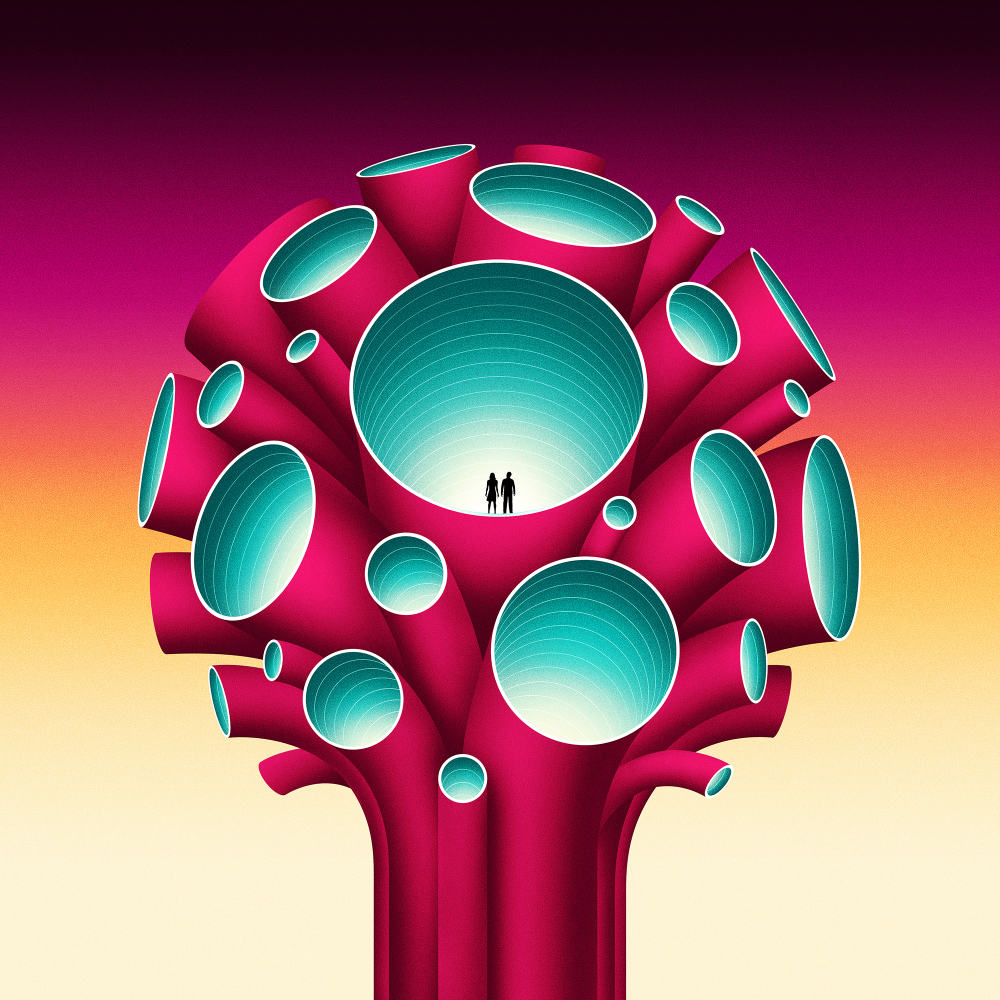
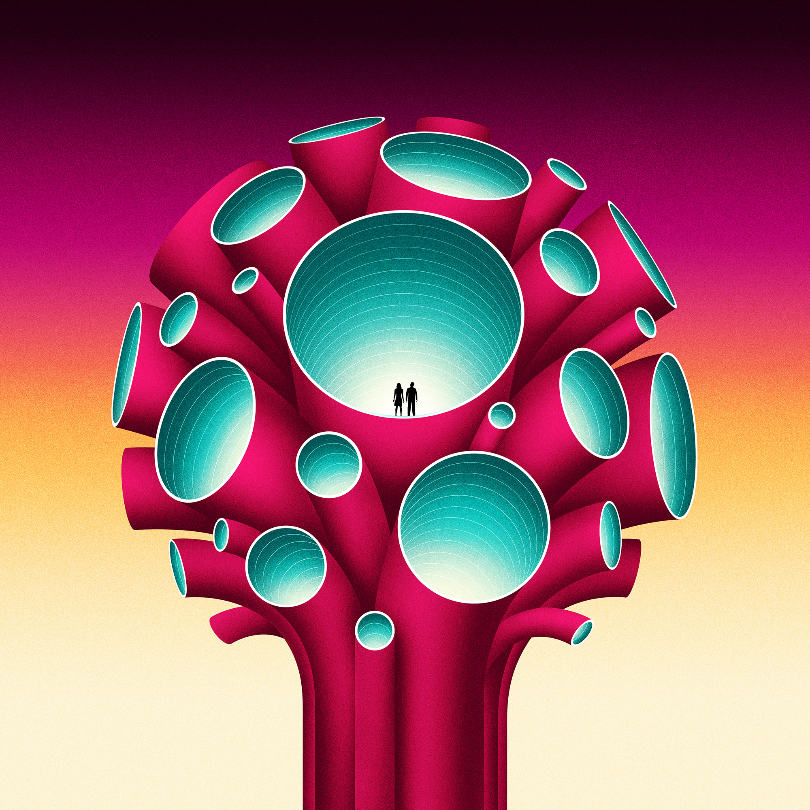

La Boca have the rare, impressive ability to create designs
and artwork resembling some of the best album sleeves
lurking in your dad’s record collection. The studio, founded
in 2002, is based in west London and has gathered an
envious collection of awards, including Cannes Lions,
European Design Awards, and the AOI Illustration Awards.
Their exquisitely executed, psychedelic style is the
combined result of each of the studio's members' unique
influences, having hailed from London, Bordeaux, Devon
and Switzerland.
“We work as a studio, so most of our designs are created
as a team,” says Scott Bendall of La Boca. “It's not unusual
to have two or three people working on a single piece.”
Keen to work on more animated projects in the future, the
team (based in two studios, one in London and one in
Amsterdam) are never short on work from a selection of
devoted clients. In their own words, La Boca’s creations
are: “Retina teasing, tactile and occasionally slightly
wonky.”


 
